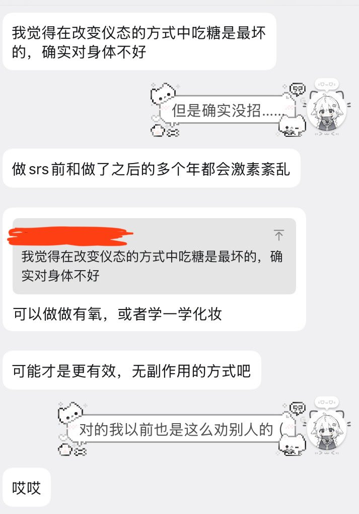

沫柠🍥
@Moningmeng
RT @meowania_Fan: day6
突然换老师了呜呜，还没来得及跟上个老师好好告别（送鱼板）
上午状态不好学不下去就跟他在qq上聊了一上午，说了很多心里话也处成了好朋友喵
老师过往的经历，其实没什么，只是遇见了一些神人（
还有…700fo纪念！感谢大家关心！🥰 htt…

Meowania🏳️⚧️
@meowania_Fan
day6
突然换老师了呜呜，还没来得及跟上个老师好好告别（送鱼板）
上午状态不好学不下去就跟他在qq上聊了一上午，说了很多心里话也处成了好朋友喵
老师过往的经历，其实没什么，只是遇见了一些神人（
还有…700fo纪念！感谢大家关心！🥰 https://t.co/zJb2hfQ9Hg